Peach Kids
A sustainable packaging redesign for Peach Kids — a children's soap line built around fun shapes, bold characters, and zero-waste construction.
Peach Kids makes soap designed specifically for children's small hands — shaped like stars, animals, and geometric forms that make bath time feel like play. The brief was to redesign the packaging to match the product's personality: fun, colorful, and environmentally conscious. The original box leaned heavily on text and abstract shapes. The redesign leads with character.
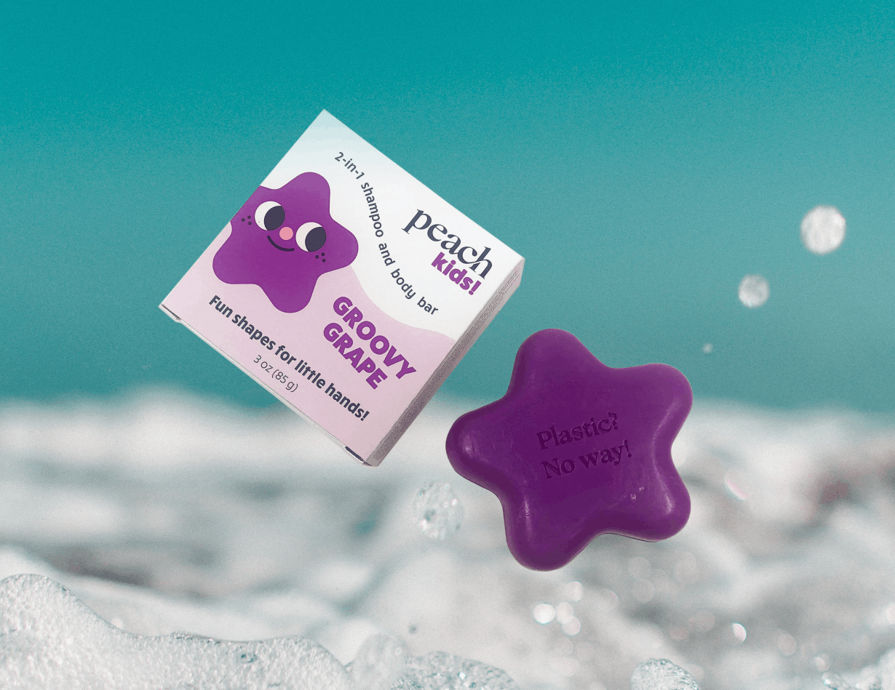
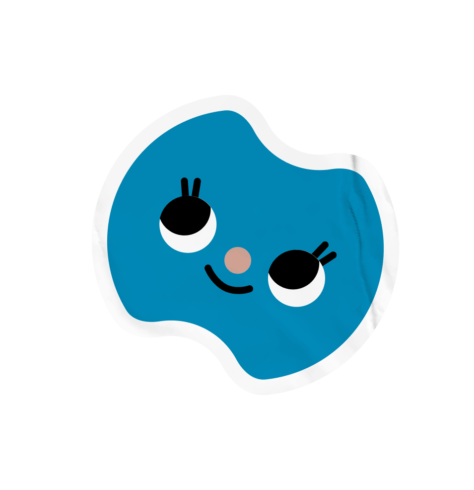
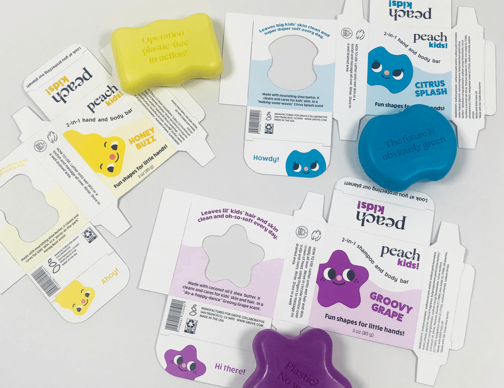
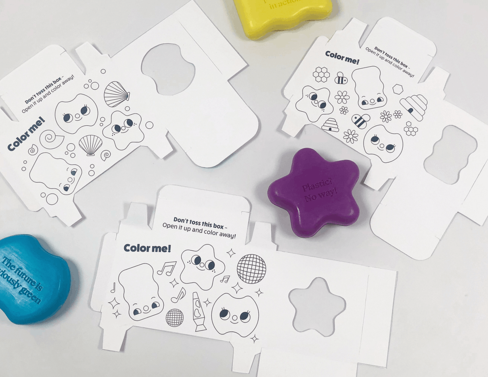
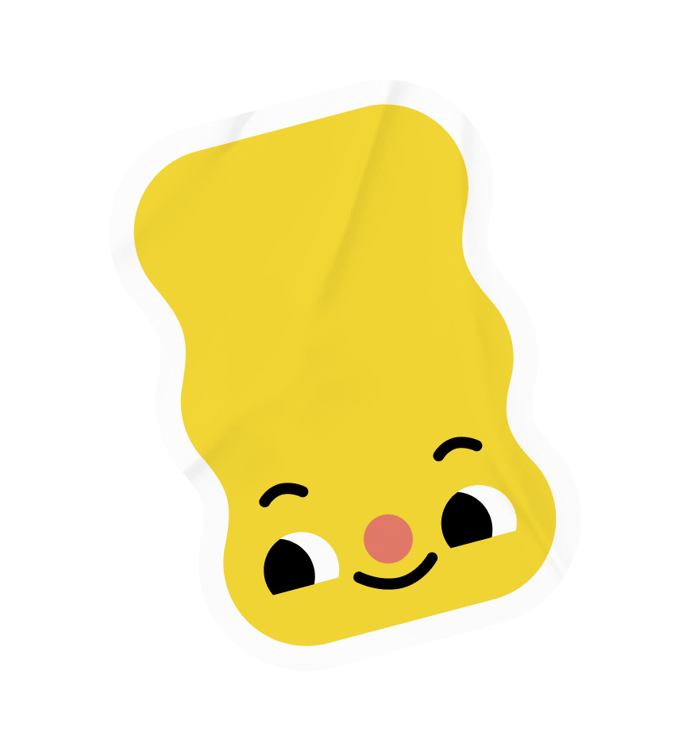
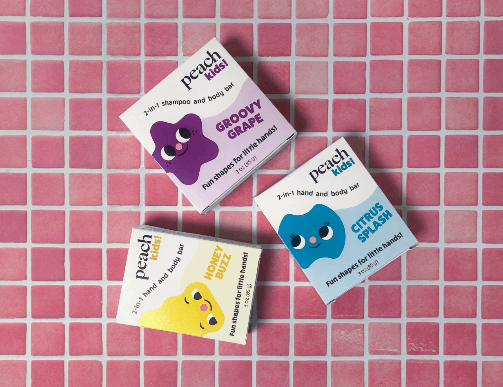
Brand colors
The palette needed to work hard across multiple soap variants while keeping the system cohesive. Each color is bold enough to read instantly on shelf but soft enough to feel safe and approachable for a children's product. The overall palette leans warm and playful — more toy store than pharmacy.
Character Illustrations
The packaging needed something kids could connect with immediately. Rather than relying on the product photography alone, a cast of original characters was developed to live across the packaging, giving each flavor and shape its own personality. These characters are designed to extend beyond the box — they appear in coloring pages tucked inside the packaging, giving kids a reason to interact with it long after the soap is gone.
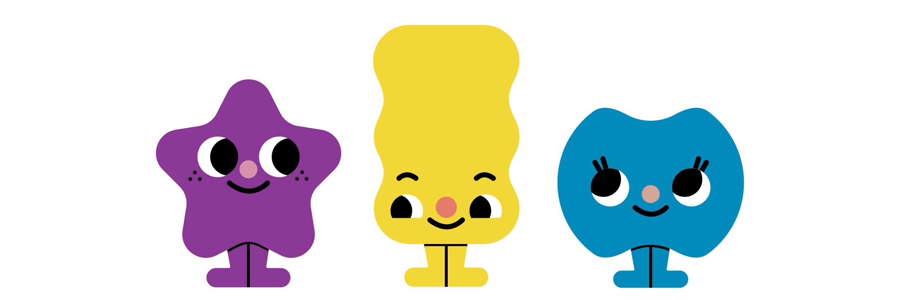
Dielines
One of the core constraints of this project was sustainability. The final packaging was engineered to assemble without glue or tape — every fold is structural, meaning the entire box can be recycled as a single material. The cutouts on the back panel serve double duty: they let customers see the soap shape and catch the scent before buying, while keeping the packaging open and airy rather than a sealed black box.
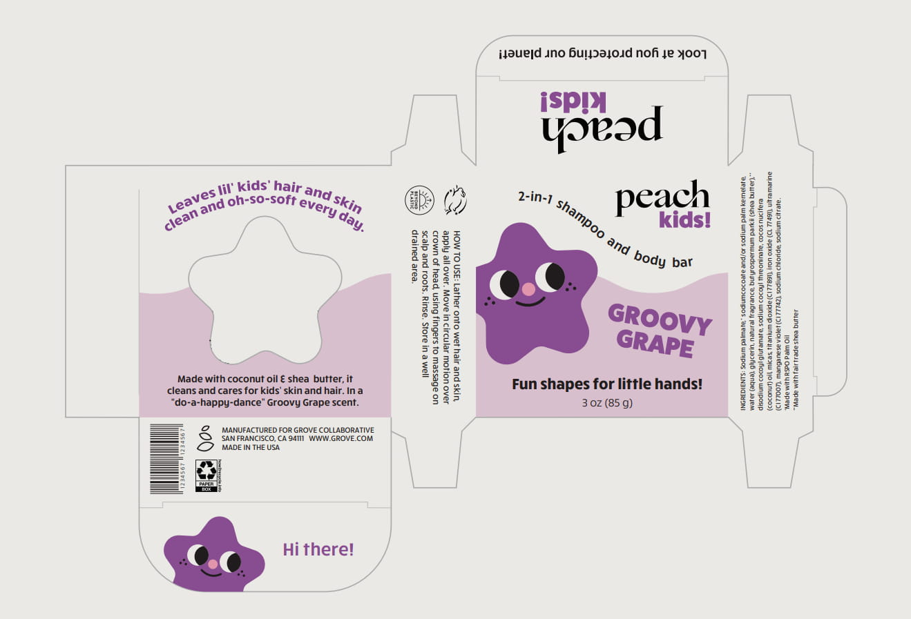
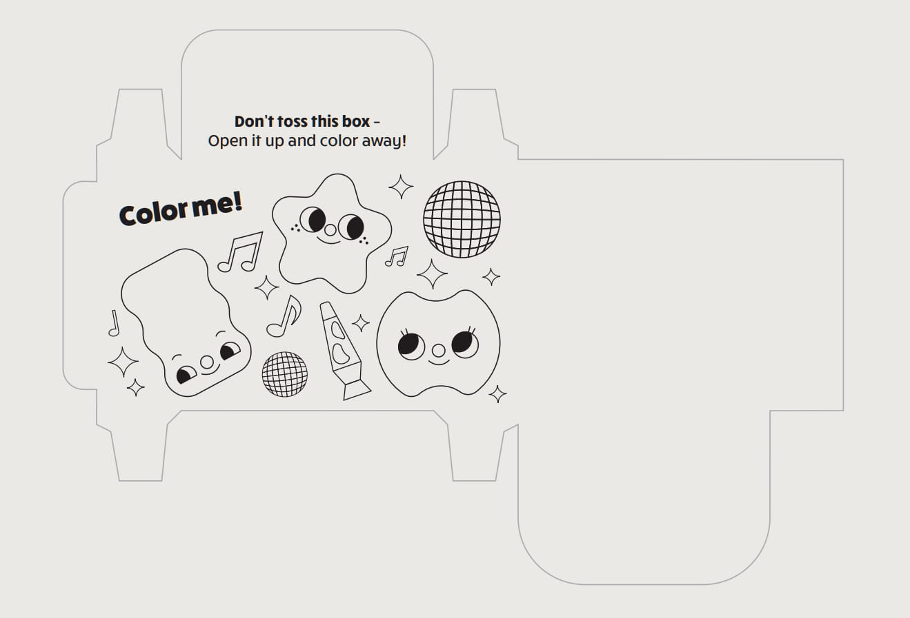
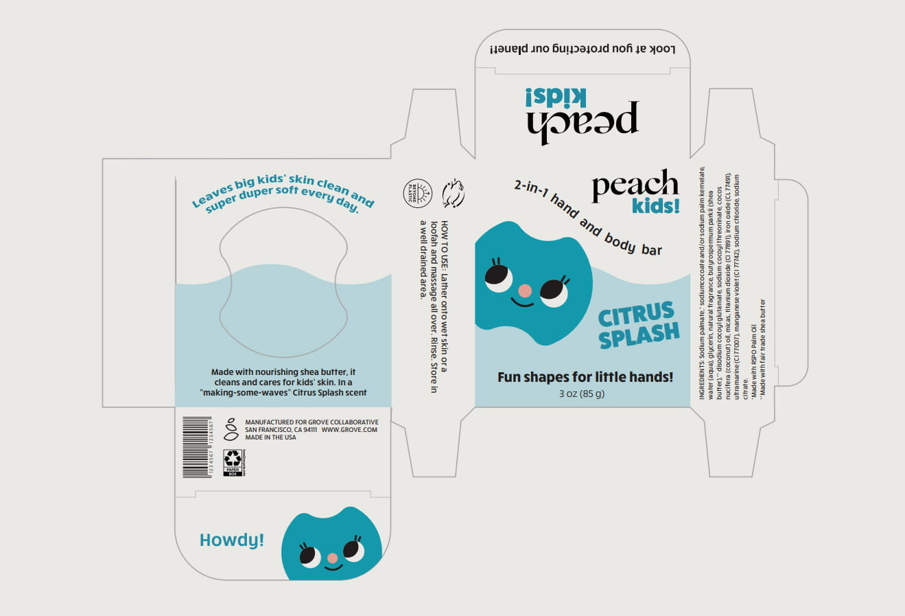
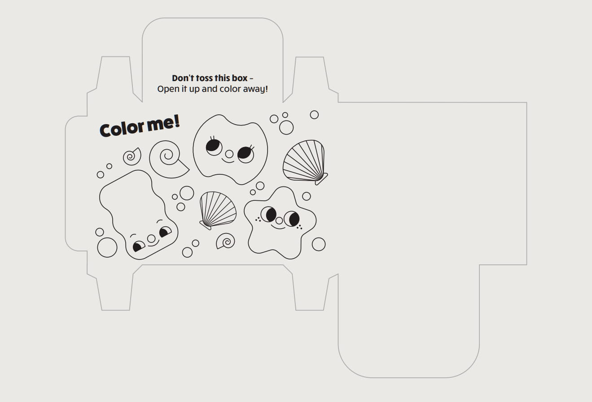
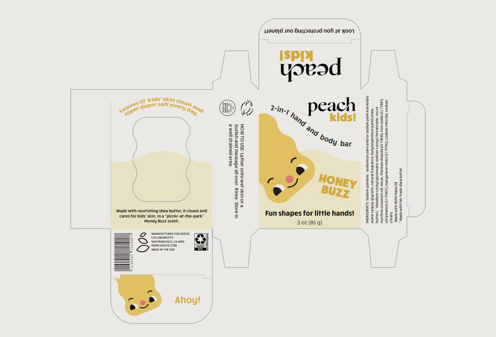
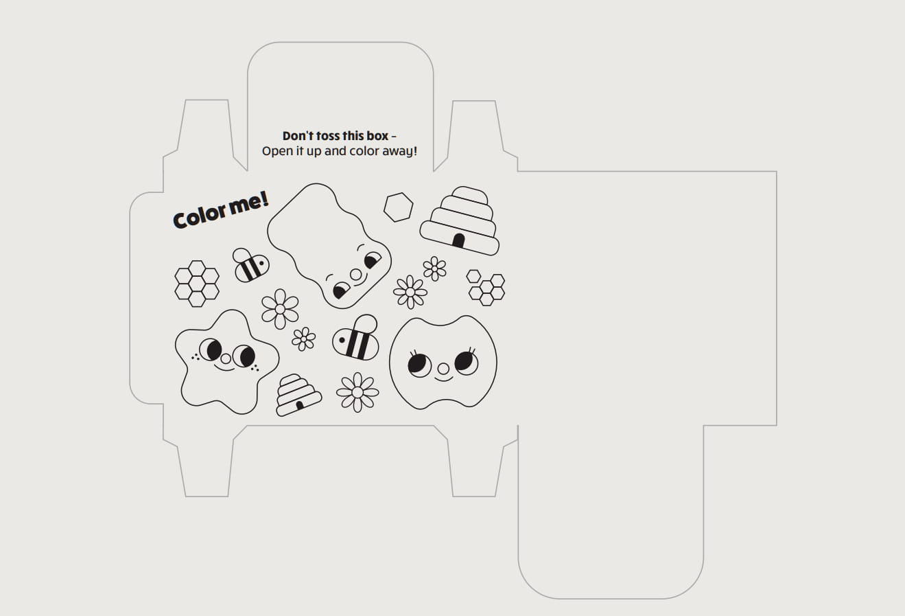
The final boxes were physically constructed and presented as a complete packaging system. The no-glue construction means every box is fully recyclable — a small detail that reflects a larger commitment to designing with the product's full lifecycle in mind.